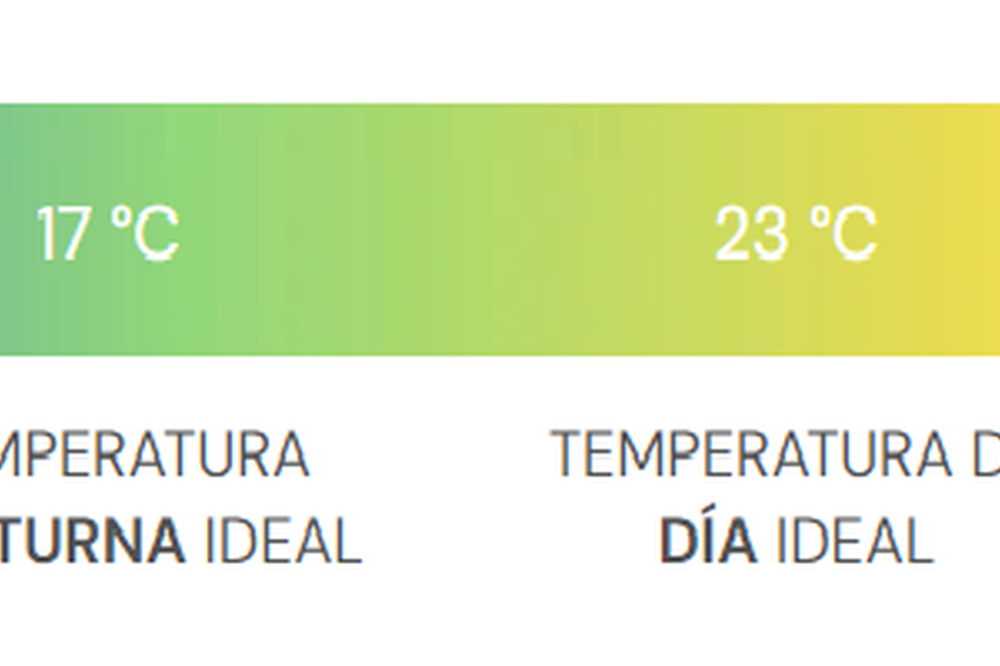

Guía de germinación
Acá vamos a sumar el paso a paso. Por ahora te dejamos una estructura simple.
Antes de empezar
- Usá agua limpia y temperatura estable.
- No manipules la semilla de más.
- Evitá exceso de humedad (riesgo de hongos).
La Temperatura De Germinación Juega Un Papel Crucial
Antes de saltar directamente a los métodos de germinación, hay un par de reglas de oro de germinación. Para obtener los mejores resultados, recomendamos mantenerse dentro de estas pautas, sin importar cómo elija germinar. Dicho esto, de todos los factores a considerar, la temperatura es una de las más críticas. Las semillas siempre buscarán incluso la menor cantidad de humedad, pero utilizan la temperatura como una señal de que necesitan hacerlo.
- La temperatura ideal está entre 22° y 25°C (71–77°F)
- Su entorno de crecimiento debe ser húmedo/húmedo, pero nunca mojado
- El rango de humedad relativo debe estar entre el 70% y el 90%
- Las semillas favorecen la iluminación fluorescente (Coode blanco frío 33)
- Minimice la cantidad de manejo de semillas que hace
- En los tapones hidropónicos / de lana de roca, el valor de pH ideal es de 5.8 a 6.2
¿Querés ayuda?
- Escribinos por WhatsApp y te orientamos.